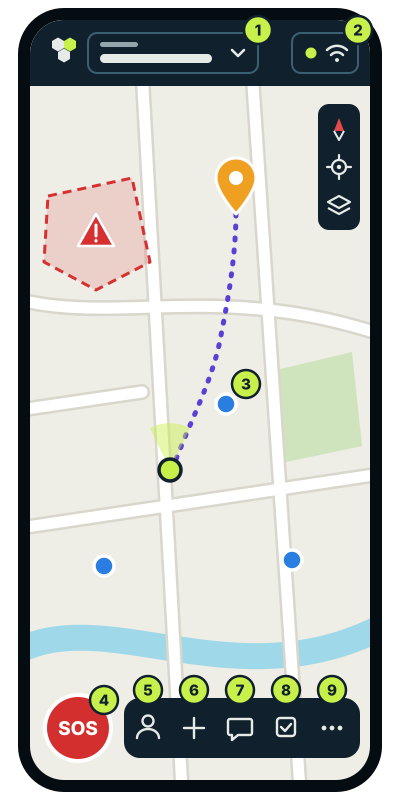
The screen
-
Your group
To invite, organise or change group.
-
Connection
Green: what you send gets through.
-
A teammate
Tap them to go to them. The green one is you.
-
SOS
Calls everyone for help, with your position.
-
Me
Your name, your state and your position.
-
Add
Marker, route, area, task or report.
-
Chat
Messages and reports.
-
Tasks
Who does what.
-
More
Measure, coordinates, diary, offline maps, settings and this guide.
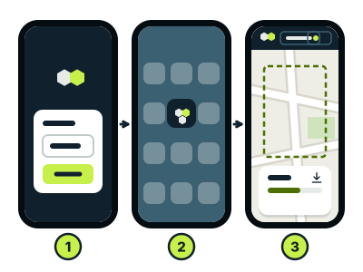
Getting started
Once: half an hour, on wifi, on a quiet day.
-
1. Your name
No email, phone number or password.
-
2. On the home screen
Android: ⋮ → Add to Home screen
iPhone: Share → Add to Home Screen -
3. Your map, offline
More → Offline maps → Download
Details
- Open tesel.eu/app in the phone’s browser (on Android, Chrome; on an iPhone, Safari). If you arrive with an invitation, typing your name already joins you to the group. From the home screen it opens like an app and works offline.
- Before downloading, move the map to your area. It takes space: better on wifi. Under Options you can name it, choose the detail (“Streets”, “Town”, “Region”) and, in Spain, Portugal, Andorra and southern France, also get the topographic and satellite maps. If it is cut, Resume carries on where it stopped. Even if you download nothing, Tesel keeps an overview and the last places you looked at, so it is never blank offline.
- An emergency is not the time to learn a tool. With the team, agree on a meeting point, who coordinates and what to do without coverage. Run a drill (a message, a test SOS you then cancel and, with radios, the same with phones in airplane mode and Bluetooth on) and repeat it now and then, with charged batteries. If you will use radios, set them up well ahead.
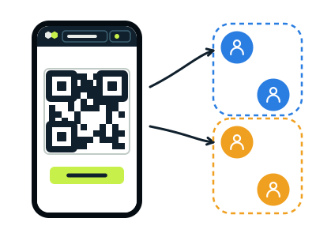
The group
Whoever creates it, coordinates: invites, marks where the work is and organises the teams.
-
Create
To start → Create a group
-
Invite
Group → Invite → QR or link
The invitation is the key: whoever has it gets in.
-
Teams
Group → Organise → New team
Details
- The “To start” card shows on the map while you are in no group. To join without the link: To start → Join a group and scan the QR.
- Mark where the work is: Add → Area → draw it → Operation area. Every member will see “Download” to have that map offline.
- A team has a name, a colour and members. Members are listed by team and, on the map, each person wears their team’s colour. A task or a sweep strip for a team counts as a task of each member and tells all of them.
- Whoever coordinates is told without looking: a short notice says when someone joins, when a report arrives (what is happening and the casualties) and when someone starts or finishes a task.
- The members list says who does not share their position; an antenna marks whoever has a LoRa radio or reaches you by radio.
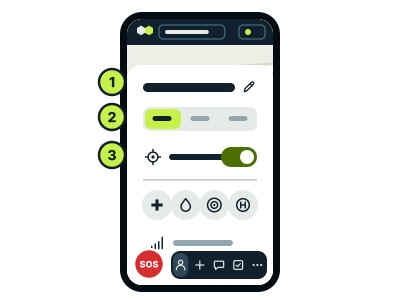
Me
Let the team know how and where you are.
-
Your state
Me → 2Active · Resting · Off duty
-
Your position
Me → 3Share my position
-
Go to someone
tap them → Guide me
Details
- Your name changes in Me with the 1pencil, and the group sees it at once.
- Me also shows whether you have a LoRa radio connected, your profile (Civil Protection, Firefighters, Police…), your battery, your coordinates and how precise your GPS is, what you carry (in four groups: from the first-aid kit and water to the 4×4, the boat or the satellite phone) and your tasks. The battery cannot be read on an iPhone.
- While you do not share your position, a card on the map reminds you, with a button to do it. Off, the team sees where you were, unless you turn on Hide where I was too.
- Whoever is resting or off duty shows on the map as an empty circle.
- A teammate’s card opens by tapping them on the map or in the group’s list: at the top, how far they are and “Guide me”; below, the same as in their Me.
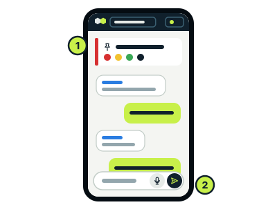
Talking
Short messages: by radio they cost less and arrive sooner.
-
Write or dictate
Chat → 2Dictate
-
Send a report
Add → Report → what is happening
It stays pinned under 1Reports.
Details
- With the chat closed, a new message shows in a notice with “View”. Dictation writes what you say, you check it and send it; it uses the phone’s speech recognition (Google or Apple) and on most phones needs internet.
- A report says what is happening (fire, collapse, missing person…) and, if you wish, the casualties by triage colour, the hazards, how the access is and what is needed. It goes with your position in one message, by radio too.
- In the chat a report takes one line, which opens when tapped. The “Reports” tab keeps them all, with the casualties added up, and they show on the map.
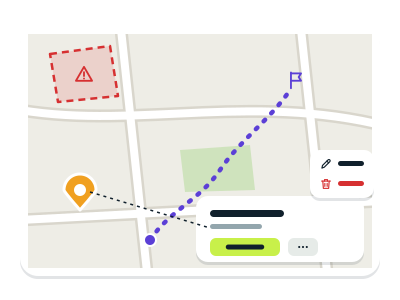
Marking the ground
What you mark, the team sees at once.
-
Mark
Add → Marker · Route · Area
-
Correct
tap it → → Edit
-
Warn of a danger
Add → Area → draw it → Danger area
Whoever walks in feels their phone vibrate and is warned.
Details
- A marker (a meeting point, a hazard, an injured person) goes where you tap; a route, point by point (up to 25) and Finish; an area, drawn and given a style. “Delete” is in the same menu as “Edit”.
- If someone reads you coordinates, press Coordinates on the card and type them instead of tapping the map; the same when choosing a task’s place.
- File (beside undo) reads a route from a GPX, KML or GeoJSON file: the app thins it to 25 points and says how far at most it strays from the original. An area can come from a KML or GeoJSON file too.
- Tap a route and press Follow route: it takes you to its start and then point by point, with what is left, and warns you if you stray. Task on this route hands it to someone; at the end, Task done closes it.
- Each phone watches the danger areas with its own GPS, offline too; while there is one, the GPS stays on for this, sharing nothing. Areas also say how large they are.
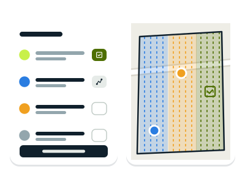
Tasks and sweeps
Who does what, for all to see.
-
Give a task
Tasks → New task
-
Do it
Start → Done
-
A sweep
tap the area → Plan a sweep
Details
- Only the text is needed: type it or pick a common one (search the area, check a home, treat an injured person…). If you wish, who it is for and where, with Pick on the map or Coordinates.
- From the map: hold a point → Task here, or tap a marker, an area or a route, and the task goes wherever that object goes.
- The list groups them by who has them, yours first. Each person starts and finishes their own tasks and those for anyone; a task along a route or a strip starts with Follow route or Follow strip. If you mark one done by mistake, Undo in the notice brings it back. A number on the button says how many you have.
- For a sweep, the area is drawn with the style “Search area, assigned”. Choose the terrain (open, 25 m between people; scrub, 10 m; dense forest, 5 m) or the spacing, how many teams and who leads each; Turn lanes changes their direction. The lanes show on the map, one coloured strip per team, before Create sweep.
- Each team gets its strip as a task; Follow strip guides it lane by lane and says how much it has swept along its way. When all are done, the area turns to “Search area, cleared” by itself.
- Use them however suits your team: for everything, for what matters or for nothing.
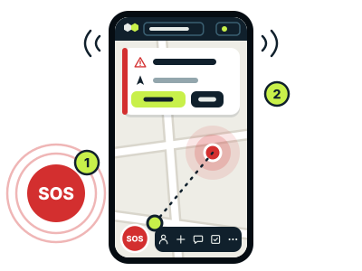
SOS
It reaches everyone, with your position.
-
Call for help
1SOS → what is happening → Send SOS
-
Answer
2Acknowledge → Guide me
Details
- An SOS makes phones vibrate and ring, and closes the chat if it was open. The card says how far and in which direction whoever calls is.
- If the phone does not know where you are yet, the SOS goes anyway and the position follows as soon as it has one. Sending it closes whatever you had open. When someone presses “Acknowledge”, you will know; until it has reached someone, the notice says so, and by radio it is repeated until someone receives it. If it is no longer needed: Cancel SOS.
- “Are you OK?” The coordinator turns it on: Group → Organise → “Are you OK?” check. Whoever is active and has not moved or touched Tesel for 30 minutes feels their phone vibrate and is asked; a tap on the screen answers. With no answer in 2 minutes, an SOS goes out with their last position. It never asks whoever is resting or off duty, and for now it only works with Tesel open on screen.
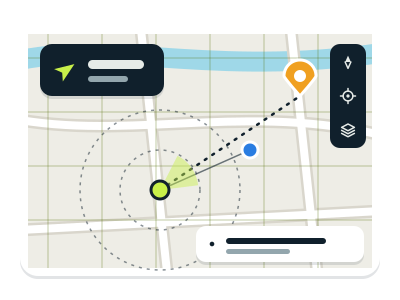
Finding your way
It works without a group and offline.
-
Go to a place
tap it → Guide me
-
Coordinates
hold a point
-
Map type and layers
layers
Details
- Top right, the target shows you and centres the map on you (move it with your finger and it stops following you), the compass, above it, puts north at the top and, below the target, the layers. The GPS is only used while something needs it: sharing your position, the target or a guide.
- “Guide me” shows an arrow, the distance and a dotted line to the target; if it is a teammate, the target moves with them. While guiding, the screen stays on.
- Holding a point (on a computer, right click) shows how far it is, what you can do there and its coordinates: tap them to copy them. If someone reads you some, type them as given in More → Go to a coordinate and the app places them. The format (degrees, DMS, UTM or MGRS) is chosen in Settings.
- More → Measure distances: tap point by point to see the distance and, from three points, the area.
- In the layers you choose the map by tapping its picture: streets (streets, buildings and roads), topographic (contour lines, paths and the names of places, ravines and springs) or satellite (aerial photos; from afar, a single Sentinel‑2 image, the same for everyone; close up, each country’s official aerial photos). Topographic and satellite cover Spain, Portugal, Andorra and southern France.
- Below, each layer is a button that lights up while it shows: members, markers, tasks, reports, trails (the line of each person’s last hours), services, weather warnings, relief, cadastre, radar and grid. Your position and SOS calls always show.
- Relief shades hills and valleys and, beside the distance to a place, says how much the straight way climbs and descends and its steepest stretch. Cadastre (online and close up) shows the parcels with their number and polygon, as a plot is named in the countryside.
- Radar: distance rings around you, closer or wider apart with the zoom, and a line to the five nearest teammates with their distance and bearing; while it is on, the GPS stays on. MGRS grid, the one firefighters, the UME and ATAK use: lines every 100 km, 10 km, 1 km or 100 m as the zoom allows, with their figures and the name of each 100 km square.
- Services: round icons for health centres and hospitals, pharmacies, fire stations, police, helipads, town halls and fuel stations; the large ones from afar, the rest at street level. Tap them to see their name and be guided there. They come from OpenStreetMap; offline, in areas downloaded with “Streets” detail. In some villages the map may be incomplete.
- Weather warnings: the official yellow, orange and red ones (AEMET in Spain, IPMA in Portugal, through MeteoAlarm) tint their area. If your location is on and you are inside one, a card says what it warns of and until when; holding a point shows the warnings there. They are kept to be seen without coverage.
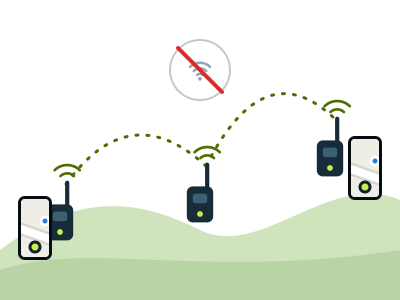
Without internet
Change nothing: Tesel uses whatever link there is, and what you write goes out as soon as there is a connection.
-
With a radio
tap the connection → Connect radio
It can stay in your backpack.
-
iPhone?
use the Bluefy browser
Safari cannot connect radios.
With internet
With a radio
Through a bridge
Details
- Top right, Tesel says how it is connected: “WiFi”, “4G/5G” or “LoRa”, or several at once (“WiFi · LoRa”). Green dot: connected; orange: connecting; red: no connection. Where the phone does not say (on an iPhone, for instance), it shows “WiFi/5G”. Pressing it opens Connections, with a card per link.
- Each time you send something, a short notice says whether it reached the group, went by radio or is waiting on the phone.
- With a radio connected, your messages, your position and your SOS go by radio, the team’s reach you and the indicator says “LoRa”. What you wrote without a radio goes out when you connect it, and if the link drops, Tesel gets it back by itself.
- Whoever has a radio and coverage acts as a bridge without doing anything: what comes by radio goes up to the server and the other way round, so whoever has a radio but no coverage still follows. With neither, the downloaded map keeps working and you can write; if someone has a radio, stay close.
- Tesel uses MeshCore radios: small devices that connect to the phone over Bluetooth and pass messages on with LoRa, a signal that goes very far on very little power, in Europe, in the free 868 MHz band (no licence). We will publish the recommended models when the field tests end. Each radio is set up once, from a computer with Chrome, with MeshCore’s official web flasher and the “Companion Bluetooth” firmware.
- Range: from a kilometre in a city to tens between high places. Each radio repeats the others’ messages: the more there are, the further they reach. A radio on a high balcony or at a window helps the whole team. A radio sends very little data and the law limits how long it may transmit, so it is slower: SOS calls first, then messages, and positions last.
- In Me and on each card, the “LoRa radio” line says who has one connected: whoever has one stays in touch even if the network falls; whoever does not is cut off. The app knows by itself, and if you have none, Connect takes you to connect it. The card also says when something of theirs last reached you by radio or by the server.
- If someone nearby uses the MeshCore app, their messages appear in the chat’s “MeshCore” tab; to answer, use that app. On an iPhone, Bluefy is a stopgap we are still testing, until the native app arrives; over the internet, Tesel works the same in Safari.
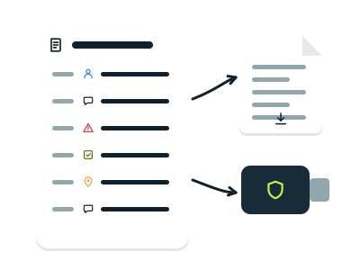
The diary
Everything that happened, in order.
-
Read and download it
More → Operation diary → Download
-
An encrypted copy
Encrypted log → Save a copy
Details
- The diary tells who joined, the messages and SOS calls, who received them, and every marker or area added, changed or deleted. Downloaded, it is a text file for the report, with the coordinates in your format.
- In the same panel, the encrypted copy keeps all the group’s events, which only its members can read. Load a copy on another phone of the group gives it whatever it lacks: a backup, or a way to bring the coordinator, on a USB stick, what a phone lived through by radio alone.
Security
Everything is encrypted: the server cannot read the messages.
-
The invitation is the key
If it leaks, the coordinator creates a new group and invites again.
-
Lock your phone
The keys are on it.
-
Your position is yours
Shared only if you want.
Details
- The group’s things are encrypted with a key only its members have. Leaving a group deletes it from the phone.
- Within the group everyone is trusted: the app does not check who writes each message, so a member could pass for another.
- By radio the encryption is simpler: it keeps out curious eyes, not someone with means and will. Do not send by radio what you would not say aloud in a public place.
Settings
More → Settings
- Coordinate format
- Degrees, DMS, UTM or MGRS. Remembered.
- Screen always on
- It stays on while Tesel is open. Uses battery.
- Full screen
- With Chrome and similar browsers, on Android and a computer, Tesel fills the screen from the first tap. Back or Esc leave it until next time; here, for good.
- Alarm sound
- Turns the SOS beep off or on. The vibration stays.
- Notifications
- An SOS alerts you with Tesel in the background too, if the browser allows it. Tapping it opens Tesel.
- Language
- Spanish or English; at first, the browser’s. Remembered.
If something does not work
The top says “No connection”
Your phone has no internet. What you write is kept and will go out later. If you have a radio, connect it.
The map is blank
Without internet only the areas downloaded beforehand show. Download your area in “Offline maps” next time you have wifi.
I cannot see a teammate on the map
They are most likely not sharing their position: the group’s members list says so. Ask them to share it in Me.
I cannot find the radio when connecting
Check it is on, charged and set up with the “Companion Bluetooth” firmware, and that you use Chrome or Edge (on an iPhone, Bluefy). If it was connected to the MeshCore app, disconnect it there first.
The radio says it has no free channels
Open the MeshCore app, delete a channel you do not use and connect again from Tesel. Tesel never deletes channels by itself.